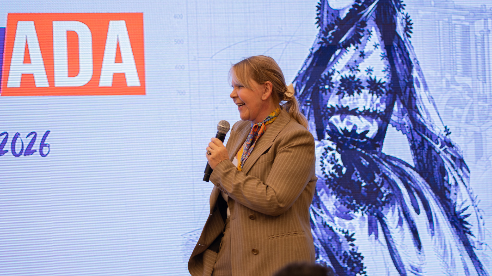

Any Regina Rothmann
Abertura do ProgramADA 2026, dando as boas-vindas a todos os estudantes
Gestora do Centro Internacional de Arte e Cultura Humanista Recanto Maestro, diretora comercial da AMF, curadora estratégica da Fundação Antonio Meneghetti e professora do bacharelado em Ontopsicologia.